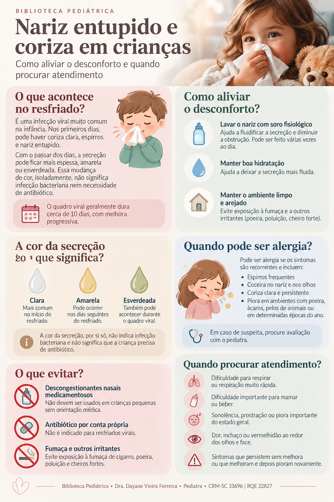

Nariz entupido e coriza em crianças
Como aliviar o desconforto, entender a secreção nasal e reconhecer quando é importante procurar avaliação médica.
Por que o nariz fica entupido?
Nos resfriados, geralmente causados por vírus, a mucosa do nariz fica inflamada e produz mais secreção. A criança pode apresentar coriza, espirros, obstrução nasal e tosse.
A secreção ficou amarela ou verde?
Isso pode acontecer durante a evolução normal de uma infecção viral e, isoladamente, não significa que a criança precise de antibiótico.
Quanto tempo pode durar?
Um resfriado pode se estender por cerca de 10 dias e continuar melhorando progressivamente. Algumas crianças levam até cerca de 2 semanas para ficar totalmente bem.
O que pode ajudar em casa?
A solução salina ajuda a fluidificar e remover secreções, facilitando a respiração pelo nariz. Em bebês, isso também pode ajudar antes das mamadas quando a obstrução está atrapalhando a alimentação.
- Ofereça líquidos e mantenha a criança bem hidratada.
- Mantenha o ambiente livre de fumaça de cigarro e outros irritantes.
- Em crianças pequenas, a aspiração nasal pode ser feita de forma gentil quando houver secreção dificultando a respiração, conforme orientação profissional.
- Não use antibióticos apenas porque a secreção ficou amarela ou verde.
Resfriado, alergia ou outro problema?
Nem toda obstrução nasal persistente é resfriado. Rinite alérgica pode causar crises de espirros, coceira no nariz ou nos olhos, lacrimejamento e coriza frequente. Obstrução nasal persistente, respiração pela boca e roncos também merecem avaliação pediátrica.
Sinais de alerta
Procure avaliação médica com prioridade se a criança apresentar:
- dificuldade para respirar, respiração rápida ou esforço para respirar;
- lábios ou rosto com coloração azulada;
- dificuldade importante para mamar ou beber líquidos;
- muita sonolência, prostração ou piora importante do estado geral;
- inchaço ou vermelhidão ao redor dos olhos;
- sintomas nasais e tosse persistentes sem melhora, ou melhora seguida de nova piora.
Quando conversar com o pediatra?
Além dos sinais de alerta, vale procurar orientação quando os sintomas permanecem por tempo prolongado, quando a obstrução nasal é recorrente, quando há suspeita de alergia ou quando a família tem dúvidas sobre lavagem nasal ou medicamentos.
Infográfico: nariz entupido e coriza em crianças

Fontes e revisão
Conteúdo elaborado a partir de materiais da Sociedade Brasileira de Pediatria (SBP), American Academy of Pediatrics/HealthyChildren e NHS.
SBP — Sinusite nas crianças
SBP — Rinossinusite na infância
HealthyChildren — cuidados para resfriados
NHS — resfriados em crianças
Última revisão: setembro de 2026.